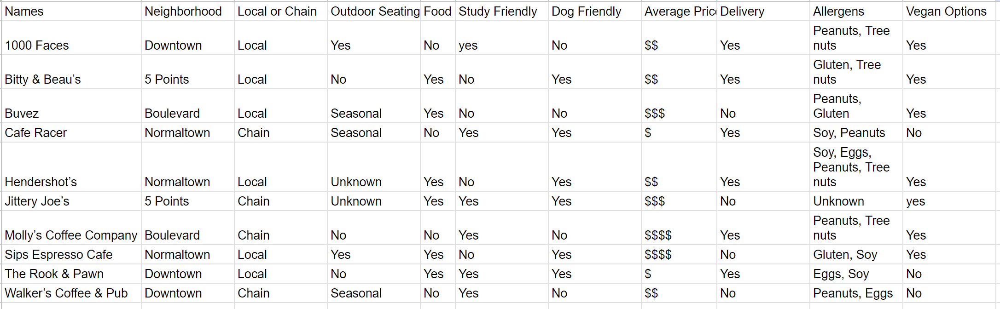
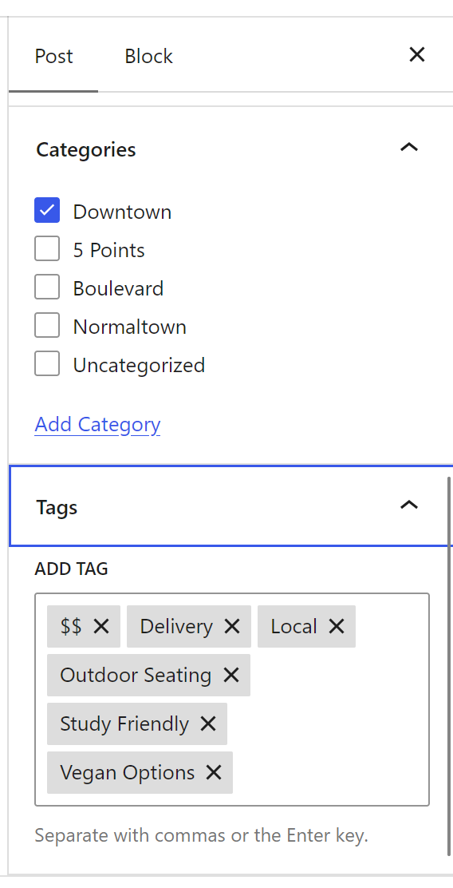
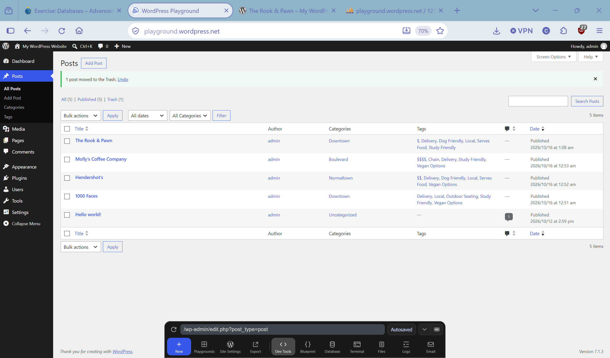

STRUCTURE: Build the Data
I started with the ten Athens coffee shops from the exercise and put each one on its own row in a Google Sheet. Then I chose columns by asking what would actually help someone pick a coffee shop. The attributes I settled on were:
- Neighborhood (Downtown, 5 Points, Boulevard, Normaltown)
- Local or Chain
- Outdoor Seating, Food, Study Friendly, Dog Friendly, Delivery, Vegan Options
- Average Price ($ to $$$$)
- Allergens
The values are placeholder data, since the exercise isn't checking accuracy. The point was the structure, not the facts.

The finished Google Sheet: one row per shop, one column per attribute.
Where the data got messy
- Unknown values. Hendershot's and Jittery Joe's have "Unknown" for Outdoor Seating, and Jittery Joe's has "Unknown" for Allergens. A blank cell and "Unknown" mean different things, so I chose to write "Unknown" explicitly.
- Seasonal values. Buvez, Cafe Racer, and Walker's have "Seasonal" outdoor seating. "Yes" would overstate it and "No" would understate it, so Outdoor Seating needed a third value.
- Multiple values in one cell. Allergens holds lists like "Soy, Eggs, Peanuts, Tree nuts." That's easy to read but hard to filter on.
- Price format. I used dollar signs ($ to $$$$) instead of exact numbers because ranges are easier to group by.
Taxonomy: categories and tags
Categories organize and tags describe across that organization, so I split the columns like this:
| Categories (organize) | Neighborhood: Downtown, 5 Points, Boulevard, Normaltown |
|---|---|
| Tags (describe across) | Local, Chain, Outdoor Seating, Serves Food, Study Friendly, Dog Friendly, Delivery, Vegan Options, and the price tags ($, $$, $$$, $$$$) |
| Neither (goes in content) | Allergens, plus the "No" and "Unknown" answers that a tag can't express |
The question to ask here is what this structure lets us retrieve later. A neighborhood category lets us list every shop in one area, and a tag like Study Friendly lets us find matching shops in any area.
MAP: Translate the Model to WordPress
The spreadsheet is the conceptual model, but WordPress Posts only give us a fixed set of fields: Title, Content, Excerpt, Featured Image, Categories, and Tags. So I decided where each column would go:
| Spreadsheet column | WordPress field |
|---|---|
| Names | Post Title |
| Neighborhood | Category |
| Local/Chain, Outdoor Seating, Food, Study Friendly, Dog Friendly, Delivery, Vegan Options | Tags (only the "Yes" answers become tags) |
| Average Price | Tag ($ to $$$$) and a line in the Content |
| Allergens, and any "No" or "Unknown" answers | Post Content |
| One-line summary | Excerpt |
STORE: Enter the Data in WordPress Playground
In WordPress Playground I created the neighborhood categories first, then published a post for each of four shops: 1000 Faces, Hendershot's, Molly's Coffee Company, and The Rook & Pawn. Each post has a title, content, an excerpt, a category, and tags.

The post editor for 1000 Faces: the title and content in the main area, with the excerpt in the sidebar.

Category (Downtown) and tags ($$, Delivery, Local, Outdoor Seating, Study Friendly, Vegan Options) assigned to 1000 Faces.

The Posts screen showing the coffee shop posts, their categories, and tags.
Look Behind the Curtain: phpMyAdmin
Next I opened the Database controls in Playground, launched phpMyAdmin, and browsed the wp_posts table to find where my posts actually went.

The wp_posts table in phpMyAdmin, showing the database records.
Identifying the parts
| Table | wp_posts (shown in the breadcrumb: Server » Database: wordpress » Table: wp_posts) |
|---|---|
| Row / record | The line for 1000 Faces, one row for one post |
| Column / field | post_title, post_excerpt, and post_status are examples |
| Value | 1000 Faces in post_title, or publish in post_status |
| Post ID | 7 (1000 Faces); Hendershot's is ID 10 |
Similarities and Differences
- Each post is a row, just like each shop was a row in my Google Sheet.
post_titlematches my Names column, andpost_excerptandpost_contenthold the text I typed.- WordPress stored much more than I entered: columns like
post_author,comment_status, andpost_name, and extra rows I never created, such as "Hello world!", "Sample Page," an Auto Draft, and Custom Styles. - Row 9 is a second "1000 Faces" with status
inheritand the name7-revision-v1. It's a saved revision, so one post can create more than one row. - My categories and tags aren't in this current view. WordPress keeps them in other tables, so the neighborhood and tags from my sheet live somewhere else.
INTERACT: CRUD
Now working through CRUD...
Create
I created and published a new post for The Rook & Pawn (category Downtown, tags $, Delivery, Dog Friendly, Local, Serves Food, Study Friendly).
Read
I viewed the published post on the front end of the site. The page shows the title, the category link, the content, and the tags.

Read: The Rook & Pawn as a visitor sees it.
Update
I opened Molly's Coffee Company in the editor and edited the tags, then saved the change.

Update: editing Molly's Coffee Company in the post editor.
Delete
I created a temporary test post titled Trash and moved it to the Trash.
Delete: the test post is in the Trash and the coffee shop posts remain published.
RETRIEVE: Put the Structure to Work
This is where the work on categories and tags paid off. I opened a post and clicked its category and a tag, and WordPress built a page of matching posts for me.

Category: Downtown returns The Rook & Pawn and 1000 Faces.

Tag: Study Friendly returns The Rook & Pawn, Molly's Coffee Company, and 1000 Faces.

Tag: Serves Food returns The Rook & Pawn and Hendershot's.
PRESENT: One Record, Multiple Views
I picked The Rook & Pawn and found the same post in several places:
- Its individual post view, with the full content and tags
- The main posts listing (the Blog page)
- The Downtown category archive
- The Study Friendly and Serves Food tag archives

The main Blog listing.

A single post view, with category and tags shown beneath the content.